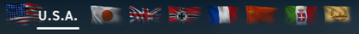
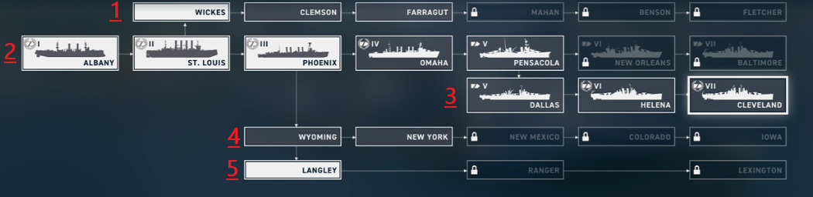

In this section we will cover Nations, ship types and the tech tree!
Nations

US Tech Tree

Ship Types
Destroyers - DD - DD's can be either a torpedo ship, or a gunship. A torpedo ship is focused on delivering a screaming barrage of death to an unsuspecting enemy without ever being seen. The gunship would have torpedos (albeit not as good compared
to aforementioned torpedo DD's) but would be focused on hunting down enemy DD's with its wickedly fast main battery reload & traverse speed.
Cruisers - Heavy - CA - At Tier 3 (Phoenix), the tech tree splits off into another 2 branches, BB's + CV's. When this branch hits Tier 5 (Pensacola), it once again splits off into another branch, CL's. For now we ignore them and continue to
progress through the line of heavy cruisers, all the way up to the Baltimore.
Cruisers are great in game for providing AA support (now that carriers have been recently launched into pvp), bombarding heavily armoured targets with high explosive shells and keeping all CA/CL and DD captains on the edge of their
seat.
Cruisers - Light - CL - Starting at tier 5, the Dallas opens the door to CL's. CL's have a lower caliber main battery compared to CA's, however the reload time is the biggest advantage. A CA on average would take 10-16 seconds to reload 3x3
203mm main guns, whereas a CL would take 5-7 seconds to reload 5x3 152mm main guns.
This would give them overall fire superiority over any other ship, as long as it can't shoot back hard. CL's are lightly armoued and are much more manueuverable than almost all ships (except for destroyers) Captains must be careful
to us cover efficiently, otherwise run the risk of getting deleted.
Battleships - BB - My favourite type of ship! The mighty battleships! They are the muscle of the fleet, the snipers, the brawlers, the hardest hitters! They are great for tanking damage for other team members, disrupting enemy tactics (if
you're in a CA/CL and you see a BB thats 1 tier higher than you coming right at you, you run and pray you don't get got!)
BB's are primarily best again other BB's due to their large caliber weapons having such good armour penetrating capabilities, though it isnt uncommonc for a BB to take a shot at CA's/CL's or even DD's for that matter! The dispersion
on a BB's main guns is tricky to master, but those beautiful shots right into the enemy sweet spots cause them a whopping 12k+ dmg
Aircraft Carriers - CV - Carriers are new to the game. We had 1 or 2 weeks of testing, then a few months later they just get thrown straight into pvp... AMAZING! xD So it royally shook up the meta and I for one think that it's brilliant! They
were the backbone of the pacific naval operations of WW2, and now here they are in WOWS: L, once again providing ultimate air superiority.